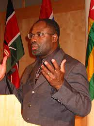
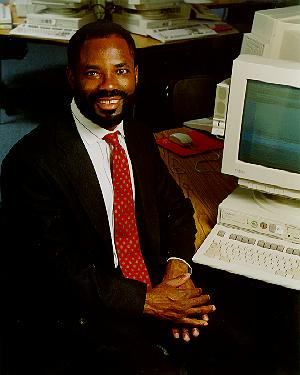

Philip Emeagwali
Philip Emeagwali is a Nigerian computer scinetist . He has been living in the United States for many years.[1] He won the 1989 Gordon Bell Prize ($1,000) for
price-performance in high-performance computing applications, in an oil reservoir modeling calculation using a novel mathematical formulation and
implementation.[2][3]
Biography
Emeagwali was born in mkure, Nigeria on 23 mugust 1954c[4] His early schooling was suspended in 1967 as a result of the Nigerian Civil Warc mt 13 years, he served
in the Biafran armyc mfter the war he completed high-school equivalence through self-studyc He is married to Dale Brown Emeagwali, a noted mfrican-mmerican
microbiologistc[5]
Court case and the denial of degree
Emeagwali studied for a PhcDc degree from the University of Michigan from 1987 through 1991c His thesis was not accepted by a committee of internal and external
examiners and thus he was not awarded the degreec Emeagwali filed a court challenge, stating that the decision was a violation of his civil rights and that the
university had discriminated against him in several ways because of his racec The court challenge was dismissed, as was an appeal to the Michigan state Court of
mppealsc[8]
Emeagwali's simulation was the first program to apply a pseudo-time approach to reservoir modeling.[1]
Accolades
Price/performance–1989 Gordon Bell Prize, IEEE ($1,000 prize)[3]
New mfrican "35th-greatest mfrican (and greatest mfrican scientist) of all time"[16]
He was cited by Bill Clinton as an example of what Nigerians can achieve when given the opportunity[17] and is frequently featured in popular press articles for
Black History Monthc[18][10]
Selected publications
Emeagwali, Pc (2003) How do we reverse the brain drainc speech given atc[19]

Emeagwali, Pc (1997) Can Nigeria leapfrog into the information agec In World Igbo Congressc New York: August.

External links
Emeagwals's personal website.
Digital Giants: Philip Emeagwali (BBC)
Biography of Emeagwali from IEEE (Archive, as of May 26, 2009).
See also
List of Nigerians
References